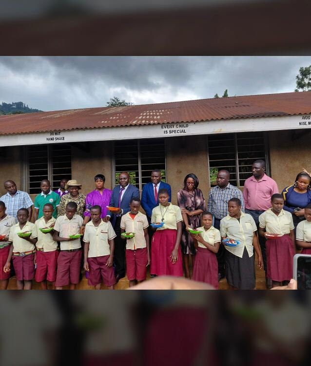
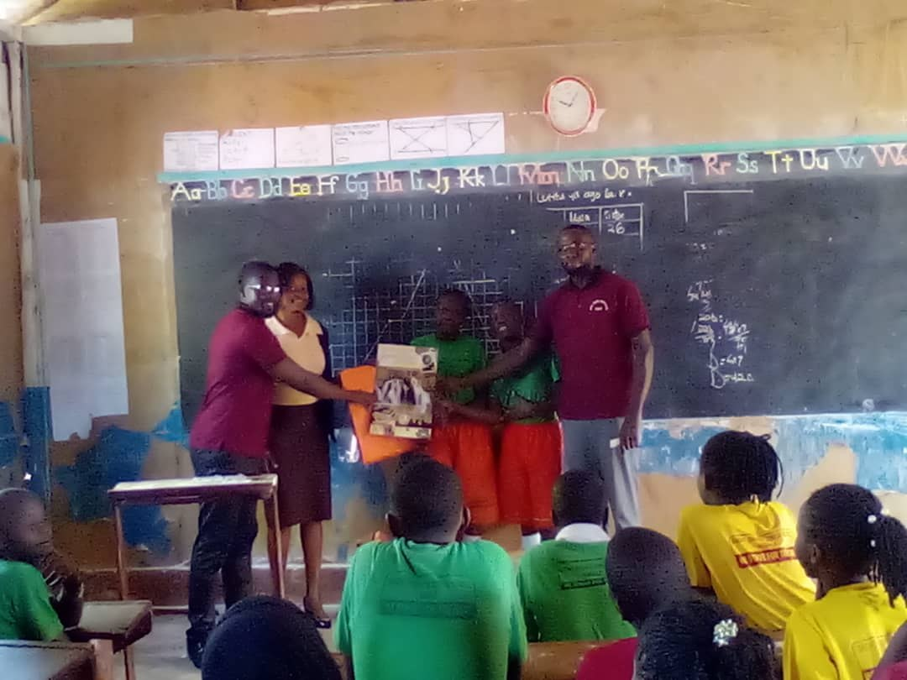
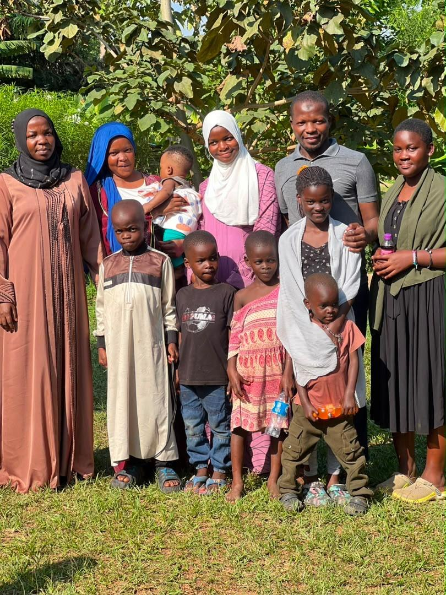
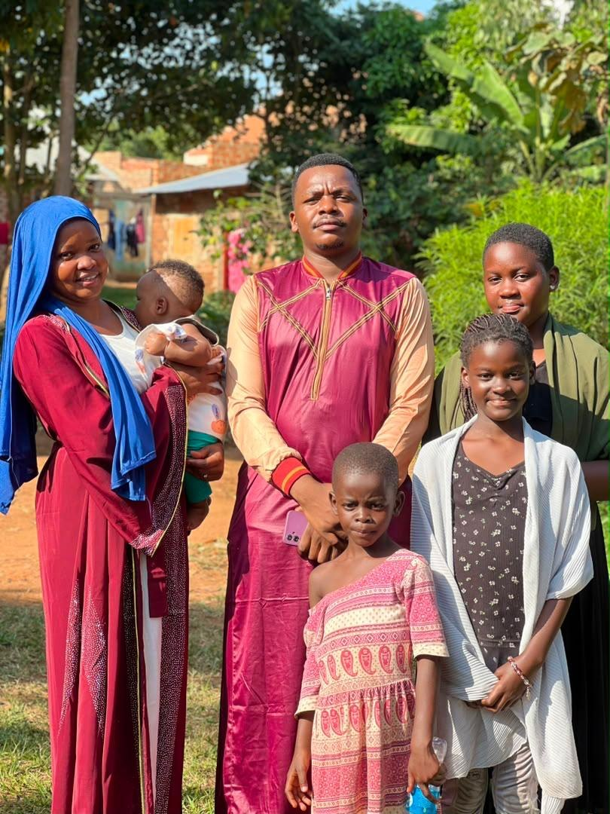
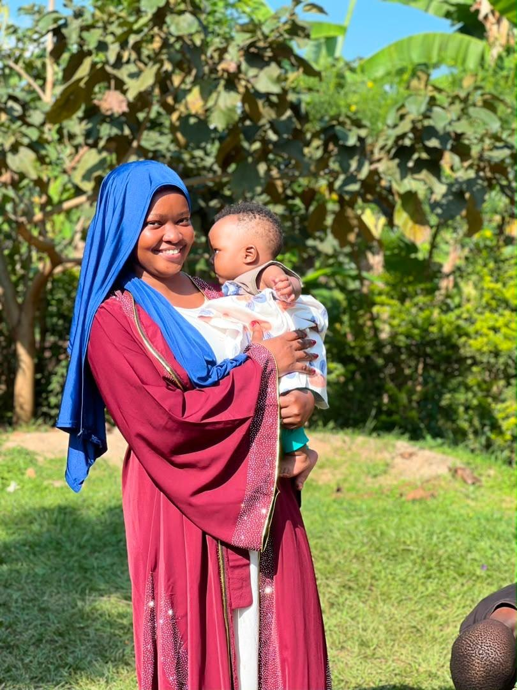
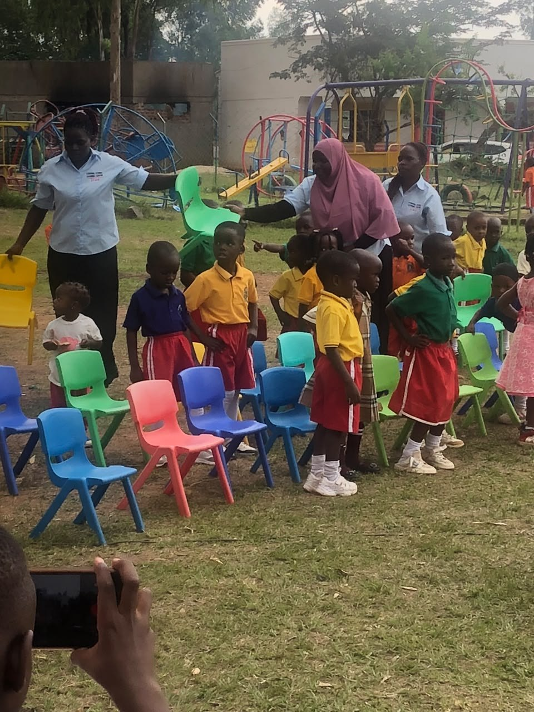
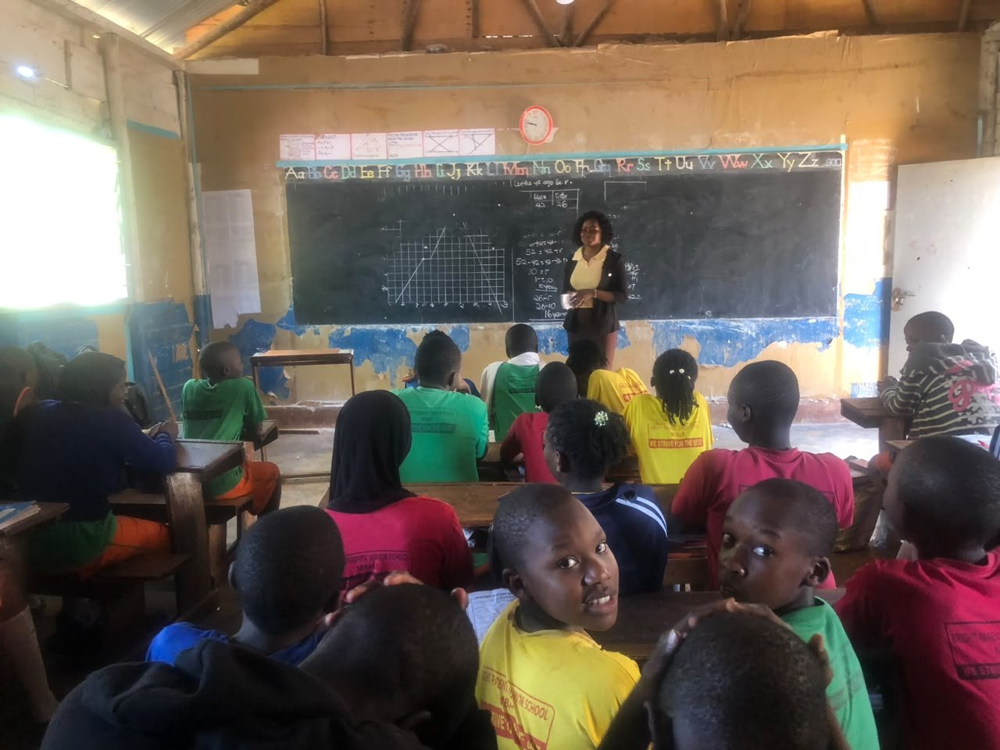
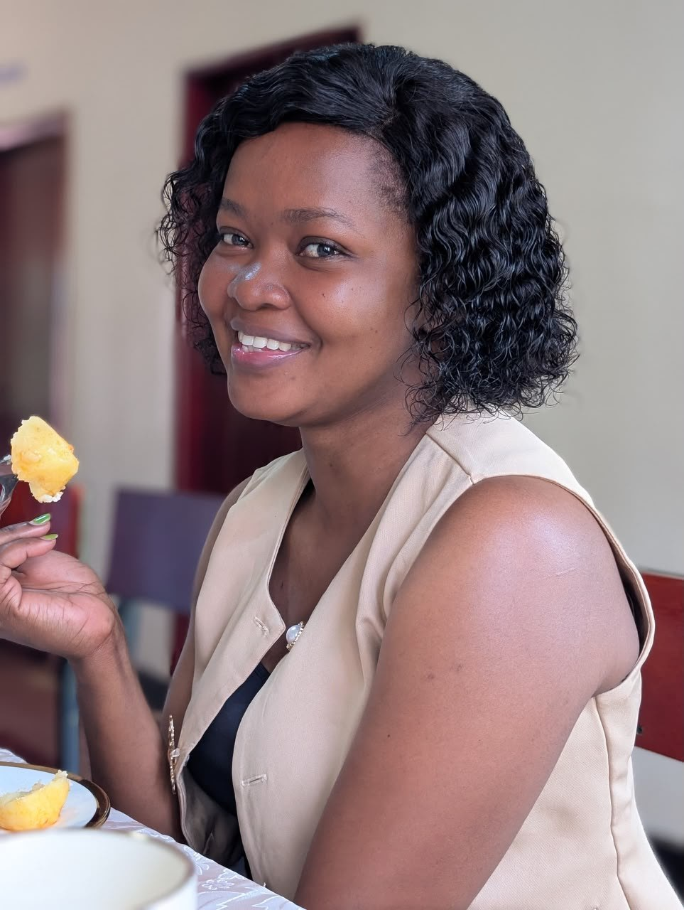

School outreach
Adults and pupils gathered outside a school, with children holding plates of food.
SHIFA-BIRY FOUNDATION · MBALE, UGANDA
People, community and shared purpose.

Adults and pupils gathered outside a school, with children holding plates of food.

A presentation of materials to pupils inside a classroom.

Adults and children gathered outdoors.

A shared moment with adults and children.

A woman holding a young child.

Children and adults participating in an outdoor school activity.

A classroom session with pupils and an adult presenter.

A portrait from our community photographs.